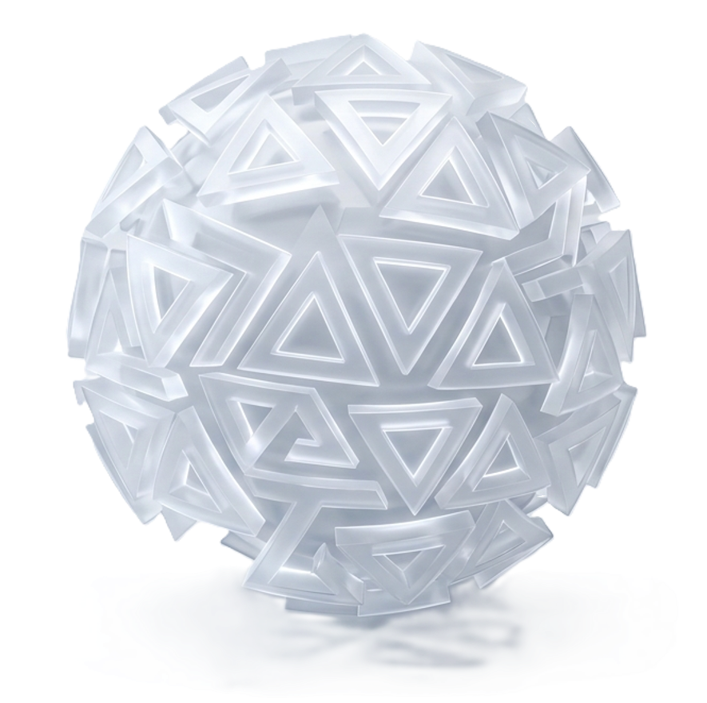

As an Artificial Intelligence and Machine Learning student, I anchor my development ethos in combining foundational software engineering mechanics with smart systems. I enjoy stripping complex real-world logic down into efficient, clean program architectures.
Whether designing precise graphics rendering logic or deploying local software systems, I focus heavily on writing performance-driven code from scratch, keeping dependencies minimal, and building smooth interfaces.
Core system logic and scripting foundations.
Cross-platform application frameworks.
Environment tools and code management.
An environment built to manipulate, render, and interface with vector structural paths and geometric models accurately.